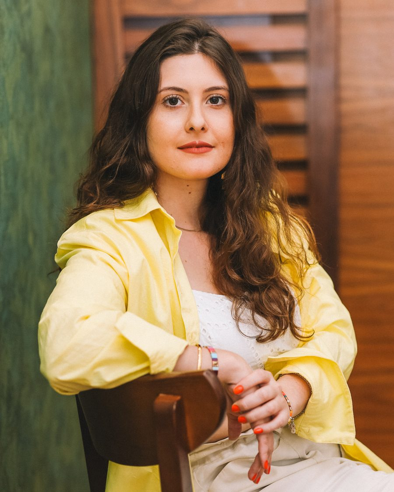
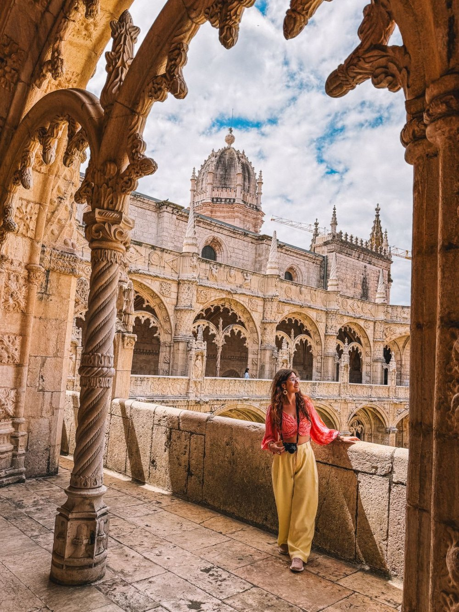
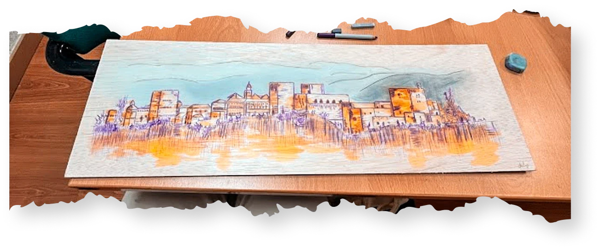
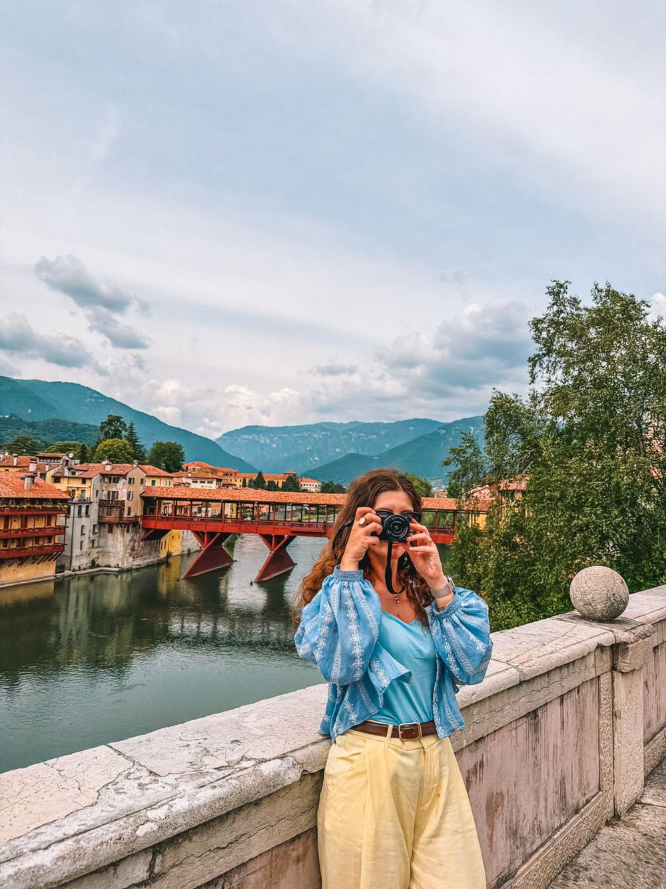
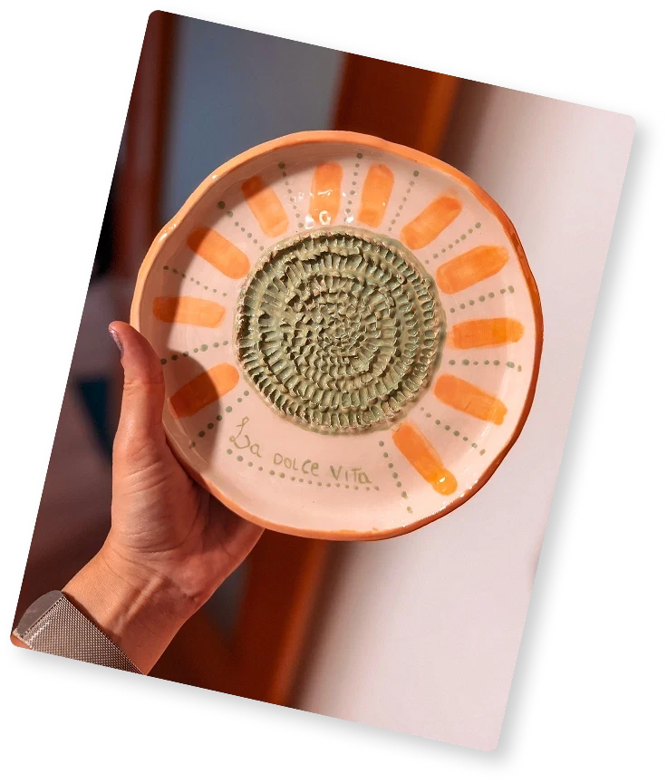

A little more about me



I'm Julia, a Brazilian brand and graphic designer currently based in Spain, and the founder and creative director of Buenas Design Studio.
I've been in the design industry for 9 years, working with businesses, creative studios, and marketing agencies in different countries.
I started Buenas Design Studio as a way to build my own design business and work with clients internationally. Along the way, collaborating with other agencies became a big part of what I do.
I work completely white-label, so your clients only ever see your agency
How I work with agencies
Most of the time, I work directly with an agency owner, creative director, or project manager. You send me the brief and whatever your team has put together so far. I'll have a look, ask questions if I need to, and we'll agree on the scope and timeline.
I'm comfortable following an established process and creative direction. I also enjoy being involved earlier in a branding project, when we're still exploring ideas.
Communication is important to me. I like keeping people updated, sharing work at the agreed stages, and making sure we're on the same page before moving forward.
And yes, I'm happy to work completely white-label. Your client relationship stays with you, and I won't share the work publicly without your permission.

I'm always at awe of Julia's work, ideas, flexibility, and timeliness.
Katie M.
What I can help with
Brand identity is where I feel most at home, but my work goes well beyond logos.
Brand identity
- Logo & visual identity
- Typography & color
- Brand guidelines
- Creative direction
- Brand refresh
Print & packaging
- Packaging
- Stationery
- Catalogs & editorial
- Posters & signage
- Print materials
Digital & marketing
- Social media
- Presentations & pitch decks
- Email marketing
- Banner ads
- Web design
A few fun facts
Favorite place ever
New York is my place! I love that city so much. The diversity, the vibrancy, always having something new to do... you hear so many languages. It is so rich in so many ways. My first exchange program was to NYC, the city has a really special place in my heart.
Most beautiful place I've visited
I’d say Lauterbrunnen, in Switzerland. It’s absolutely breathtaking, I don’t even have words to describe it! There are so many amazing places, but that one really stands out.
Strange fact about me
When I was a child I thought that if I dig a hole deep enough, I would get to Japan. LOL
Favorite food
I love eating but I don’t love cooking. Yeah... go figure. I love strogonoff, parmigiana, sushi and cheeseburgers. Not the American versions, but the Brazilian one, which is much better... sorry.
Fun fact!
Buenas is a greeting in Spanish, it also means something good. The inspiration for the name came while living in Buenos Aires – even though my mother language is Portuguese, and everyone thinks that in Brazil we speak Spanish, lol.
When I'm not designing...
I'm usually looking for somewhere new to explore. I love traveling, hiking, running, and trying creative activities. I've lived in Brazil and Spain, and I'm always curious about other places and cultures.
After more than four exchanges and five years living as a digital nomad, I'm now based in Europe.
I also love learning new things about design. There's always something I want to get better at.





Think I'd be a good fit for your team?
If you run an agency or creative studio, I'd love to hear from you.
Get in Touch